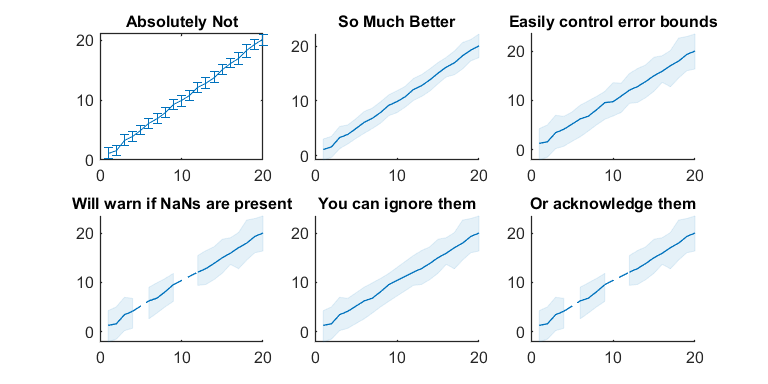

Contents
Example scripts for plotting functions
1. SetFont
This function allows for globally setting all typefaces and fontsizes in one call. Note that the SetFont must be run at the beginning of the script (or in this case before the axes are created)
clf; set(gcf, 'Units', 'inches', 'Position', [3 3 8 3]); SetFont('Arial', 12) subplot(1,3,1); hold on plot([1:10], [1:10], 'LineWidth', 2) title('Arial is fine') SetFont('Papyrus', 15) subplot(1,3,2); hold on plot([1:10], [1:10], 'LineWidth', 2) title('Papyrus is not') SetFont('Monospaced', 9) subplot(1,3,3); hold on plot([1:10], [1:10], 'LineWidth', 2) title('Serifs are bad')

2. GetUnicodeChar
Many figures require Greek letters to be used as notation (eg. mu, sigma) This function allows for them to be easily made and in some cases will be supported by the typeface used
fprintf('The string "mu" produces %s, while "Mu" produces %s\n', GetUnicodeChar('mu'), GetUnicodeChar('Mu'))
The string "mu" produces μ, while "Mu" produces Μ
3. AlphaLine
Quite simply the standard stalks for error bars are ugly, don't use them.
SetFont('Arial', 12) clf; set(gcf, 'Units', 'inches', 'Position', [3 3 8 4]); x = [1:20]; y = repmat([1:20], [100,1]) + randn([100,20])*2; y_mean = mean(y,1); err = std(y,1,1) / sqrt(5); subplot(2,3,1); errorbar(x,y_mean,err) title('Absolutely Not') subplot(2,3,2); AlphaLine(x,y,lines(1)) title('So Much Better') subplot(2,3,3); AlphaLine(x,y,lines(1), 'ErrorType', 'Percentile', 'Percentiles', [5 95]) title('Easily control error bounds') y(:,[5,10,11]) = NaN; subplot(2,3,4); AlphaLine(x,y,lines(1), 'ErrorType', 'Percentile', 'Percentiles', [5 95]) title('Will warn if NaNs are present') subplot(2,3,5); AlphaLine(x,y,lines(1), 'ErrorType', 'Percentile', 'Percentiles', [5 95], 'IgnoreNaN', 1) title('You can ignore them') subplot(2,3,6); AlphaLine(x,y,lines(1), 'ErrorType', 'Percentile', 'Percentiles', [5 95], 'IgnoreNaN', 2) title('Or acknowledge them')
Warning: NaNs in Y-array break the fill function. Explore the "IgnoreNan" option.

4. Swarm
A nicer method of showing value distribution of categories when not using a histogram or CDF
SetFont('Arial', 12) colors = lines(10); y = randn([100,1]) + 5; clf; set(gcf, 'Units', 'inches', 'Position', [3 3 8 8]) subplot(3,1,1); hold on title('Swarm + Backgrounds') % The default look. Takes the x value, a vector of y values, and the color Swarm(1, y, colors(1,:)) % The function also allows for a variety of background plots Swarm(2, y, colors(2,:), 'DistributionStyle', 'Bar') Swarm(3, y, colors(3,:), 'DS', 'Violin') % There are shorthands for each argument Swarm(4, y, colors(4,:), 'DS', 'Box') Swarm(5, y, colors(5,:), 'DS', 'Stacks') set(gca, 'XTick', [1:5], 'XLim', [0.5 5.5],... 'XTickLabel', {'Default', '+Bar', '+Violin', '+Box', '+Stacks'}, ... 'YLim', [0 10]) subplot(3,1,2); hold on title('Background Only') Swarm(1, y, colors(1,:), 'SwarmPointLimit', 0) % This won't work Swarm(2, y, colors(2,:), 'DistributionStyle', 'Bar', 'SPL', 0) Swarm(3, y, colors(3,:), 'DistributionStyle', 'Violin', 'SPL', 0) Swarm(4, y, colors(4,:), 'DistributionStyle', 'Box', 'SPL', 0) Swarm(5, y, colors(5,:), 'DistributionStyle', 'Stacks', 'SPL', 0) set(gca, 'XTick', [1:5], 'XLim', [0.5 5.5], ... 'XTickLabel', {'Default', 'Bar', 'Violin', 'Box', 'Stacks'}, ... 'YLim', [0 10]) subplot(3,1,3); hold on title('Other Options') Swarm(1, y, 'CenterColor', [1 .6 .6], 'DistributionColor', [.6 1 .6], 'SwarmColor', [.6 .6 1], 'DS', 'Violin') % If you hate your eyes Swarm(2, y, colors(2,:), 'DistributionStyle', 'Bar', 'DistributionWidth', 0.5, 'ErrorWhiskers', true, 'DistributionWhiskerRatio', 1) Swarm(3, y, colors(3,:), 'SwarmColor', rand(length(y), 3)) Swarm(4, y, colors(4,:), 'DistributionStyle', 'Bar', 'HashStyle', '/', 'HashAngle', 80) Swarm(5, y, colors(5,:), 'DistributionStyle', 'Bar', 'HashStyle', '#', 'HashAngle', 80) set(gca, 'XTick', [1:5], 'XLim', [0.5 5.5], ... 'XTickLabel', {'Colors', 'Widths', 'SwarmColors', 'Hashing', 'CrossHatch'}, ... 'YLim', [0 10])

5. ColorText
A convenient way of color coding text to replace legends
clf; set(gcf, 'Units', 'inches', 'Position', [3 3 8 3]); subplot(1,3,1); hold on title('The Matlab default') for i = 1:3 plot([1,5], [1,i]) end xlim([0 6]); ylim([0 4]) legend 1 2 3 yticks([0:4]) colors = lines(3); subplot(1,3,2); hold on title('doesn''t work with AlphaLine') for i = 1:3 AlphaLine([1,5], [1,i], colors(i,:)) end xlim([0 6]); ylim([0 4]) legend 1 2 3 yticks([0:4]) subplot(1,3,3); hold on title('but it''s ugly so who cares') for i = 1:3 AlphaLine([1,5], [1,i], colors(i,:)) end xlim([0 6]); ylim([0 4]) leg_text = ColorText({'1', '2', '3'}, colors); text(5,4, leg_text, 'VerticalAlignment', 'top',... 'HorizontalAlignment','right') yticks([0:4])
5. GetAxisPosition
Best way to ensure the ColorText legend is always in the same place
data = randn(1000,1); clf; set(gcf, 'Units', 'inches', 'Position', [3 3 8 2.5]) subplot(1,3,1); hold on title('A plot 1 unit wide') Swarm(.5, data, [1 .6 .6]) set(gca, 'XLim', [0 1], 'YLim', [-5 5]) % Limits must be set before GetAxisPosition is called [x,y] = GetAxisPosition(gca, 5, 95); text(x,y, ColorText('Legend', [1 .6 .6]), 'VerticalAlignment', 'top', 'HorizontalAlignment', 'left') subplot(1,3,2); hold on title('A plot 10 units wide') for i = .5:1:9.5 Swarm(i, data, [1 .6 .6]) end set(gca, 'XLim', [-2 12], 'YLim', [-5 5]) % Limits must be set before GetAxisPosition is called [x,y] = GetAxisPosition(gca, 5, 95); text(x,y, ColorText('Legend', [1 .6 .6]), 'VerticalAlignment', 'top', 'HorizontalAlignment', 'left') subplot(1,3,3); hold on title('legend in the bottom right') for i = .5:1:9.5 Swarm(i, data, [1 .6 .6]) end set(gca, 'XLim', [-2 12], 'YLim', [-5 5]) % Limits must be set before GetAxisPosition is called [x,y] = GetAxisPosition(gca, 95, 5); text(x,y, ColorText('Legend', [1 .6 .6]), 'VerticalAlignment', 'bottom', 'HorizontalAlignment', 'right')